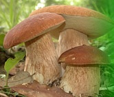

Grybai - išsamiai DELFI.lt
 Spalio 29 d., ketvirtadienis | Vilnius 12 Kaunas 11 Klaipėda 12 Šiauliai 9 Panevėžys 11 Alytus 12 Nida 10 Raseiniai 10 Utena 11 Mažeikiai 10 Biržai 11 Kėdainiai 11 Kiti miestai Paieška | Pranešti naujieną | LT RU EN | Reklama Kontaktai | Statistika | + Apie Delfi plius Prisijungti Naujausios Skaitomiausios Lietuvoje Sportas Orai Kriminalai Užsienyje Veidai Horoskopai Gyvenimas Mokslas Verslas Daugiau Sveikata Kultūra Auto M360 Politiko akimis Jaunimas Pilietis Nuomonių ringas Multimedija Teisė Medijos Karas Propaganda PT Melo detektorius Demaskuok Ačiū už pamokas Temos | Delfi VideoNaujienos
Naujausios Skaitomiausios Lietuvoje Sportas Kriminalai Užsienyje Veidai GyvenimasVerslas Mokslas Kultūra Sveikata Auto Pilietis Miestai M360 Politiko akimis
Delfi Video
Tiesioginės transliacijos Delfi Diena Delfi Dėmesio centre LaidosNaudinga
Orai Horoskopai Receptai TV Programa Valiutų kursaiDelfi projektai
Multimedija Idėja Lietuvai Kablys Smalsūs EP Atsakingas požiūris Atgal į gyvenimąDelfi kanalai
Agro Būstas Moterys Šeima Kelionės Grynas Stilius Maistas Letena Karjera Bored Panda Sek DelfiMobilusis Delfi
Naujausios žinios Naujienų temos Delfi Temos Grybai
Grybai
Grybai (lot. fungi) – gyvų heterotrofinių organizmų grupė. Grybuose nėra chlorofilo, jie negali neorganinių rūgščių paversti organinėmis, kaip augalai. Vykstant medžiagų apytakos procesams pagamina šlapalą, o jų glikogenas yra krakmolo tipo. Tai būdinga tik gyvūnams ar kitiems gyviesiems organizmams.
Neatsivalgomas troškinys su grybais, daržovėmis ir dešrelėmis (1)
Alfas kviečia nusikelti į Aziją ir pasigaminti troškinį, kuris sušildys ne tik jūsų skrandį, bet ir kažkieno širdį. #Alfas top. 250 g šviežių...
Stipriausiųjų virusas neima, arba kaip Užkalnis 400 eurų vakarienei išleido (204) 126
Kalbant apie stipriausius, aš turiu omenyje ne save, o restoraną “ Gastronomika ”. Dar prieš karantiną restoranas persikraustė į Senamiestį,...
Seimas tobulina statybas, ekspertai įspėja: miestai gali apaugti „būdelėmis“ (156)
Turi keletą arų mieste – statai namą iki 80 kvadratinių metrų be jokio leidimo. Arba du. Tokią galimybę įteisinti pasiūlė Seimo Aplinkos apsaugos...
Gilyn į Rusiją. Vaizdas pro langą į Europą: Baltijos regionas Kremliui – tik viena jo baisios strategijos detalė (1)
Tekstas pirmą kartą publikuotas Delfi.lt 2017-08-22. Su rusų ekonomistu, žurnalistu Dmitrijumi Travinu DELFI susitiko Europos universitete Sankt...
Svencelė taps nepakartojamu kurortu: planuoja paversti lietuviškąja Venecija atnaujinta (162) 1295
Lietuvos vandens sporto mėgėjų rojumi vadinama Svencelė pretenduoja į naują titulą. Sparčiai vystomo projekto išskirtinumas – kanalų sistema,...
Išskirtinė Delfi medžiaga